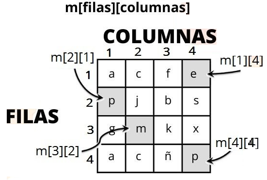
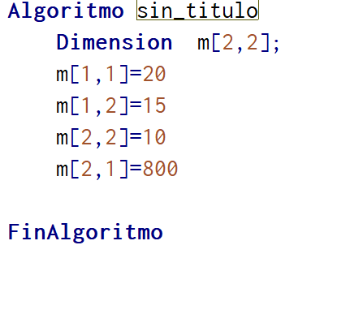

¿Que es JOptionPane?
JOptionPane es una clase que nos provee una conjunto de ventanas de dialogo que es ideal, para mostrar mensajes al usuario. Ya sean informativos, advertencias, errores, confirmaciones… O incluso tenemos la posibilidad de solicitar la introducción de un dato. Esta clase la encontramos dentro del paquete javax.swing. Y para que funcione, y que no nos muestre un error el IDE, debemos importar la librería.
Siempre al comenzar un programa en JAVA debemos importar una librería que es la swing que va acompañada del JOptionPane que es nuestra clase Si fuera Scanner la manera de leer la librería seria: import java.util.Scanner;
Pero para los JOptionPane es la librería es import javax.swing.JOptionPane;
Leer una variable cadena : String
Ejemplo
String nombre="";
nombre = JOptionPane.showInputDialog("Digite nombre : ");
Leer una variable entero: int
int numero1=0;
numero1 = Integer.parseInt(JOptionPane.showInputDialog("Digite número 1 : "));

Leer una variable decimal:Double
double numero1=0;
numero1 = Double.parseDouble(JOptionPane.showInputDialog("Digite número 1 : "));
Para mostrar los resultados
JOptionPane.showMessageDialog(null, "XXXXXXXXXXXXXXXXXXXXXXXXX");
Ejemplo 1
JOptionPane.showMessageDialog(null, "LA SUMA FUE DE :");

JOptionPane.showMessageDialog(null, "------MENU------ \n"
+ "1.-Suma \n"
+ "2.-Resta \n"
+ "3.-Producto \n"
+ "4.-Division");